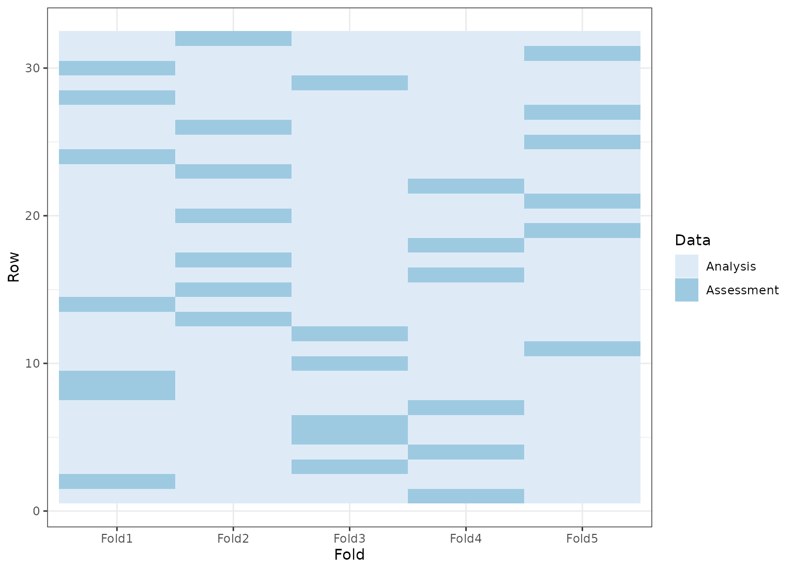

The tidy function from the broom package can be used on rset and
rsplit objects to generate tibbles with which rows are in the analysis and
assessment sets.
# S3 method for rsplit tidy(x, unique_ind = TRUE, ...) # S3 method for rset tidy(x, ...) # S3 method for vfold_cv tidy(x, ...) # S3 method for nested_cv tidy(x, ...)
Arguments
| x | A |
|---|---|
| unique_ind | Should unique row identifiers be returned? For example,
if |
| ... | Not currently used. |
Value
A tibble with columns Row and Data. The latter has possible
values "Analysis" or "Assessment". For rset inputs, identification columns
are also returned but their names and values depend on the type of
resampling. vfold_cv contains a column "Fold" and, if repeats are used,
another called "Repeats". bootstraps and mc_cv use the column
"Resample".
Details
Note that for nested resampling, the rows of the inner resample,
named inner_Row, are relative row indices and do not correspond to the
rows in the original data set.
Examples
library(ggplot2) theme_set(theme_bw()) set.seed(4121) cv <- tidy(vfold_cv(mtcars, v = 5)) ggplot(cv, aes(x = Fold, y = Row, fill = Data)) + geom_tile() + scale_fill_brewer()set.seed(4121) rcv <- tidy(vfold_cv(mtcars, v = 5, repeats = 2)) ggplot(rcv, aes(x = Fold, y = Row, fill = Data)) + geom_tile() + facet_wrap(~Repeat) + scale_fill_brewer()set.seed(4121) mccv <- tidy(mc_cv(mtcars, times = 5)) ggplot(mccv, aes(x = Resample, y = Row, fill = Data)) + geom_tile() + scale_fill_brewer()set.seed(4121) bt <- tidy(bootstraps(mtcars, time = 5)) ggplot(bt, aes(x = Resample, y = Row, fill = Data)) + geom_tile() + scale_fill_brewer()dat <- data.frame(day = 1:30) # Resample by week instead of day ts_cv <- rolling_origin(dat, initial = 7, assess = 7, skip = 6, cumulative = FALSE) ts_cv <- tidy(ts_cv) ggplot(ts_cv, aes(x = Resample, y = factor(Row), fill = Data)) + geom_tile() + scale_fill_brewer()